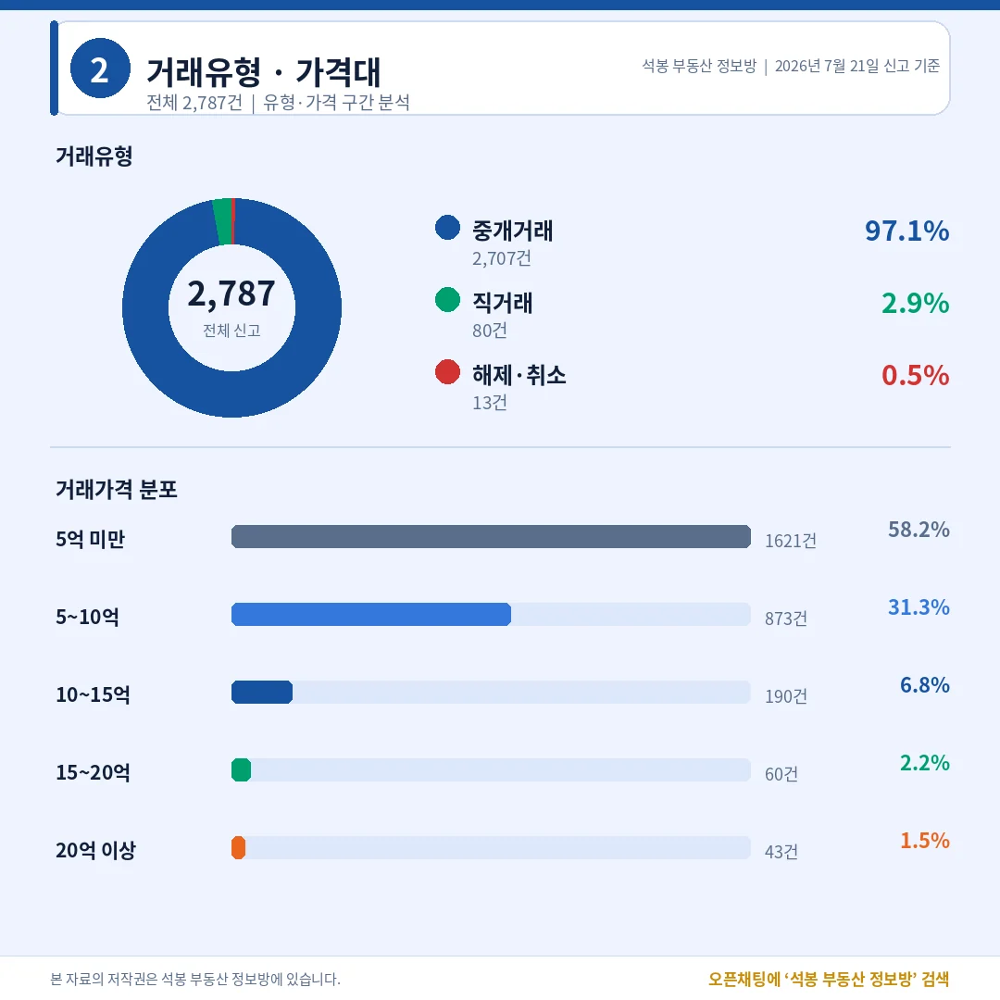
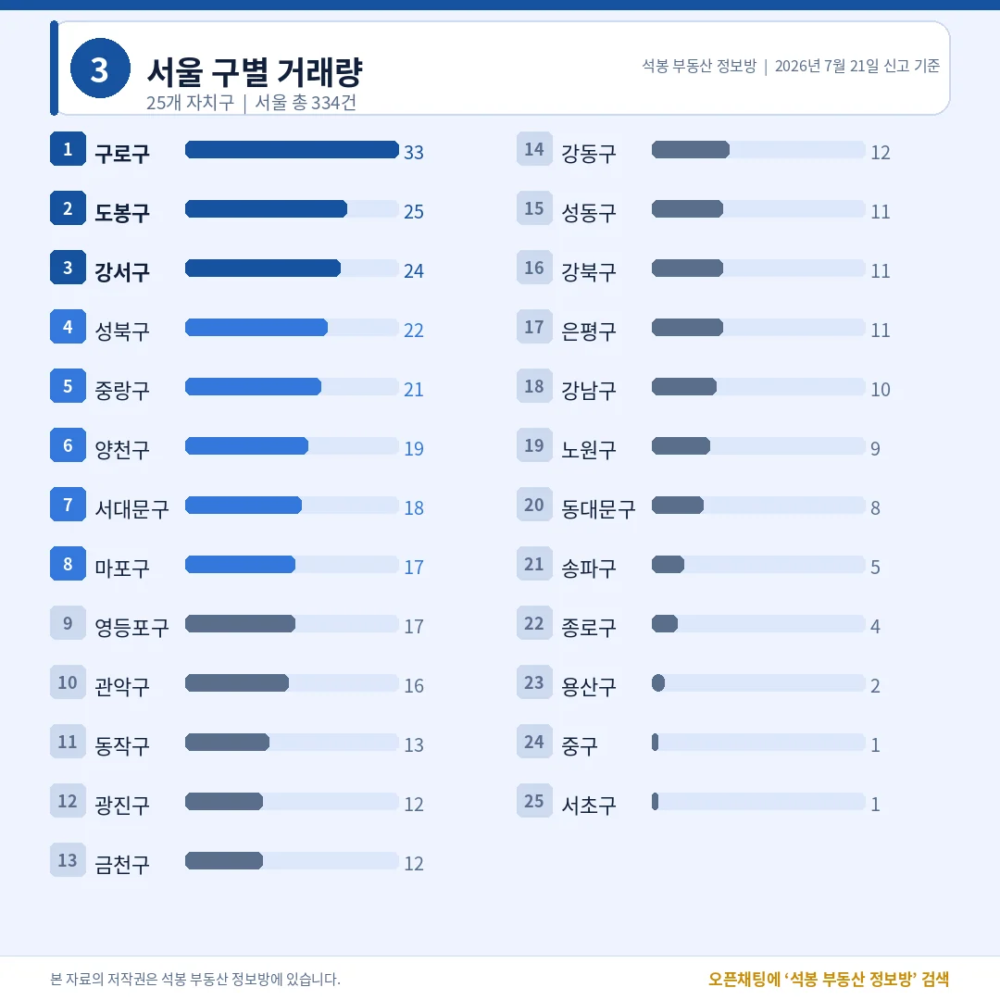
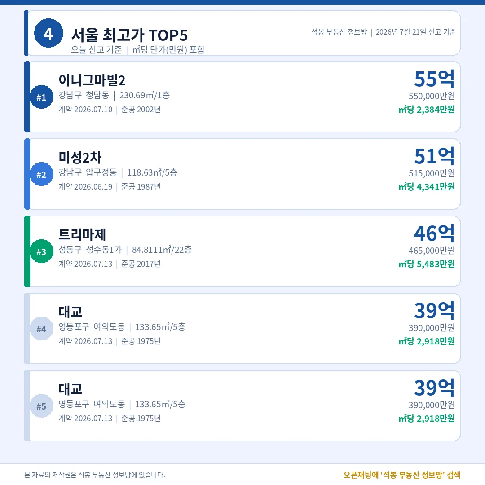
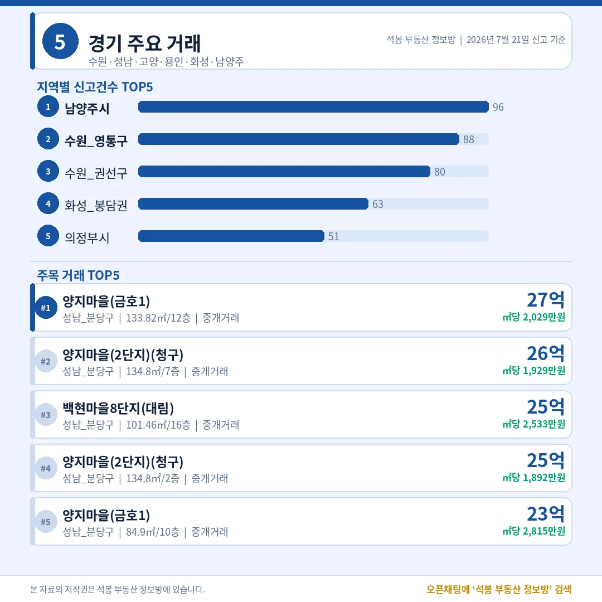
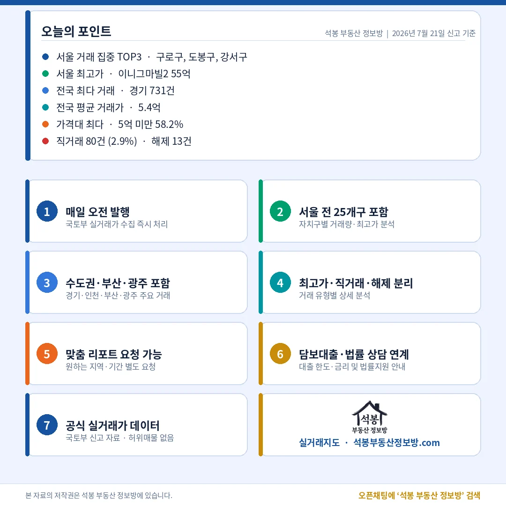

오늘 전국에서 아파트 2,787건이 실거래로 신고됐습니다. 눈에 먼저 들어온 건 지역 분포입니다. 서울·경기·인천을 합친 수도권 비중이 47.5%로 절반을 밑돌았습니다. 요즘 이어지던 수도권 쏠림과는 결이 조금 다른 하루입니다. 경기가 731건으로 판을 키웠고, 부산·인천·대구 같은 지방 광역시로 거래가 넓게 퍼졌습니다. 서울 안에서도 강남권이 아니라 구로·도봉 같은 외곽 실수요 지역이 상위를 채웠고요. 그 와중에 서울 최고가는 청담동 이니그마빌2 55억이 찍었습니다.
오늘 시장 한눈에: 5억 미만이 58%, 왜곡 없는 하루

거래유형·가격대
전체 2,787건 가운데 중개거래가 2,707건(97.1%)이었고, 직거래(중개사 없이 당사자끼리 한 거래)는 80건(2.9%)에 그쳤습니다. 해제·취소는 13건으로 0.5%였습니다. 기관이 한꺼번에 몰아 넣는 벌크 신고나 대량 취소 같은 왜곡 요인이 보이지 않아, 오늘 수치는 시장의 평소 체온에 가깝게 읽어도 됩니다.
가격대를 보면 5억 미만이 1,621건(58.2%)으로 절반을 훌쩍 넘겼고, 5~10억이 873건(31.3%)으로 뒤를 이었습니다. 열 건 중 아홉 건이 10억 아래에서 손바뀜한 셈입니다. 10~15억은 190건(6.8%), 15~20억 60건(2.2%), 20억 이상은 43건(1.5%)에 불과했습니다. 전국 평균 거래가는 5.4억이었습니다. 헤드라인을 장식하는 초고가와 달리, 오늘도 시장의 몸통은 중저가에 단단히 실려 있었습니다.
여기서부터는 회원에게 보여드립니다
카카오 로그인 3초면 전문을 읽을 수 있습니다. 무료입니다.
가입하시면 지역 시장조사 보고서(약식)를 2회 무료로 요청하실 수 있습니다.
이미 회원이면 같은 버튼으로 로그인만 됩니다
어디서 거래됐나: 경기 731, 서울은 강남 대신 구로·도봉

서울 구별 거래량
시도별로는 경기 731건이 전국 1위로 두 번째 서울(334건)의 두 배가 넘었습니다. 부산 264건, 인천 260건, 대구 217건이 뒤를 이었고, 광주 146건, 대전 124건 순이었습니다. 수도권(서울·경기·인천) 비중은 47.5%로, 나머지 절반 이상이 지방에서 신고됐다는 뜻입니다. 거래가 특정 지역에 몰리지 않고 전국으로 흩어진 하루였습니다.
서울 안을 들여다보면 이 흐름이 더 선명합니다. 서울 구별 1위는 구로구 33건, 구로동에서만 12건이 나왔습니다. 도봉구 25건(창동 12건), 강서구 24건, 성북구 22건, 중랑구 21건으로 중저가 실수요 지역이 상위를 채웠습니다. 반면 강남구는 10건, 서초구는 단 1건, 송파구는 5건이었습니다. 강남 세 구를 다 합쳐도 16건으로, 구로구 한 곳보다 적었던 겁니다. 특정 단지 쏠림 없이 여러 단지에 고르게 퍼진 중개거래여서, 오늘 서울 거래는 외곽 실수요가 이끈 모습입니다.
오늘의 최고가: 청담 이니그마빌2 55억, 재건축 기대가 뒤를 잇다

서울 최고가 TOP5
오늘 서울 최고가는 강남구 청담동 이니그마빌2 전용 230.69㎡, 55억이었습니다. 2002년 준공한 대형 고급 주택으로, 넓은 면적이 총액을 끌어올린 사례입니다. 2위는 압구정동 미성2차 51.5억(전용 118.63㎡, ㎡당 4,341만원)이었는데, 1987년 준공한 구축이라 압구정 재건축 기대가 가격에 실린 것으로 볼 수 있습니다.
3위는 성수동1가 트리마제 46.5억(전용 84.81㎡)이었습니다. ㎡당 5,483만원으로 단가로는 오늘 서울 1위인데, 2017년 준공한 신축 한강변 단지의 위상을 보여줍니다. 이어 여의도동 대교가 39억(전용 133.65㎡, 1975년 준공), 개포동 개포자이프레지던스가 37.1억(전용 84.6㎡, 2023년 준공)이었습니다. 여의도 대교는 재건축 기대가 걸린 50년 된 구축이고, 개포자이프레지던스는 3년차 신축 국민평형(전용 84㎡)이라는 점이 대비됩니다. 대형 고급, 재건축 구축, 신축이 한자리에 섞인 상위권이었습니다.
수도권 밖은 어땠나: 경기·부산·인천·대구

경기/부산/인천/대구
전국 1위 경기(731건)에서는 남양주 96건, 수원 영통구 88건, 수원 권선구 80건 순으로 신고가 많았습니다. 최고가는 성남 분당구 양지마을(금호1) 27.1억(전용 133.82㎡, 1992년 준공)으로, 1기 신도시 정비 기대가 걸린 분당 구축 대형 평형에 자금이 붙은 모습입니다. 부산(264건)은 남구·북구·부산진구가 고르게 움직였고, 최고가는 남구 더블유 36.8억이 찍었습니다. 인천(260건)은 연수구 61건을 필두로 최고가가 송도 더샵송도센트럴파크Ⅲ 19.8억, 대구(217건)는 달서구 50건에 최고가가 수성구 두산위브더제니스 22.5억이었습니다. 지방 광역시 곳곳에서 20억 안팎의 상단 거래가 나온 하루였습니다. 우리 동네 상세는 카드에서 확인해 보세요.
오늘의 인사이트

마무리(오늘의 포인트)
오늘 신고분은 돈이 넓게 흩어진 하루로 요약됩니다. 수도권 비중이 47.5%로 절반 아래로 내려앉았고, 경기 731건과 부산·인천·대구 같은 지방 광역시가 물량을 나눠 가졌습니다. 서울에서도 강남 세 구를 다 합친 16건보다 구로구 한 곳(33건)이 더 많았을 만큼, 외곽 중저가 실수요가 거래를 이끌었습니다. 전체의 58.2%가 5억 미만, 평균 5.4억이라는 숫자가 그 저변을 뒷받침합니다.
꼭대기 풍경은 여전히 익숙했습니다. 청담 이니그마빌2가 대형 면적으로 55억을 찍었고, 압구정 미성2차와 여의도 대교에는 재건축 기대가, 성수 트리마제와 개포자이프레지던스에는 신축 프리미엄이 실렸습니다. 직거래 2.9%, 해제 0.5%로 착시 요인이 거의 없었던 만큼, 두꺼운 중저가 저변과 소수의 초고가라는 시장의 두 얼굴이 그대로 드러난 하루였습니다.
원자료: 국토교통부 실거래가 공개시스템(2026년 7월 21일 신고분) · 편집·제작: 석봉 부동산 정보방 · 본 자료는 정보 제공 목적이며 투자 권유가 아닙니다.